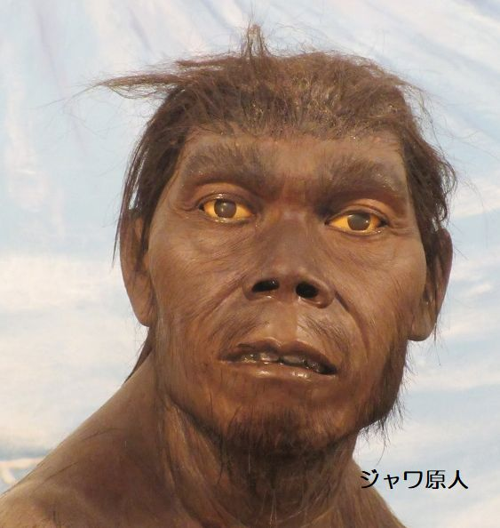
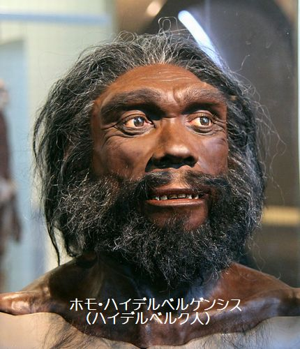
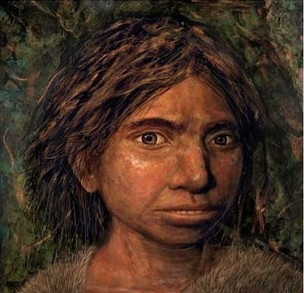

インドネシアのジャワ島のトリニールで発見された原人に属する代表的な化石人類。年代は約100万年前頃と50万年前ごろと10万年前頃

ホモ＝エレクトゥスから分岐し、アフリカからヨーロッパ大陸に広がった。彼らからネアンデルタール人と人類が分かれて進化したと考えられている。

絶滅した旧人類の一種または亜種とされており、ネアンデルタール人との遺伝的な近縁性が示唆されている。アジア全域に生息していた。